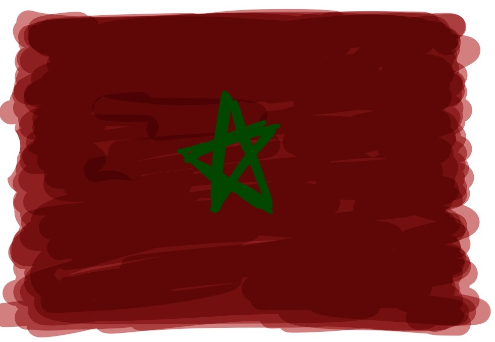
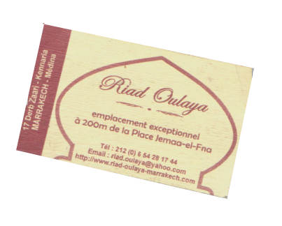
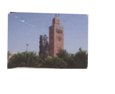
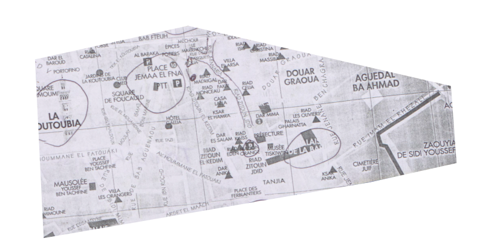
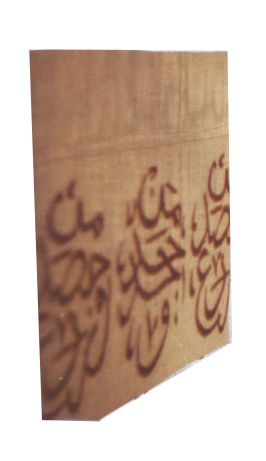
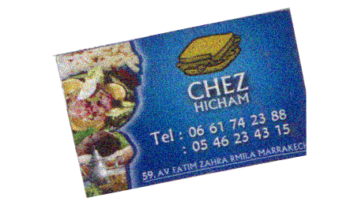
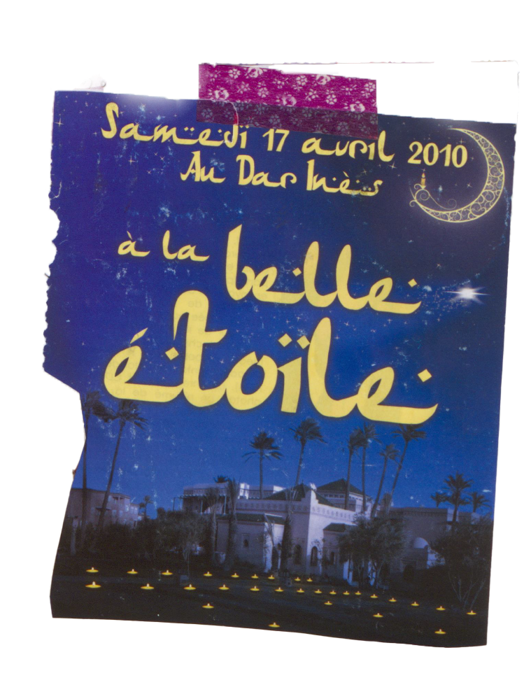
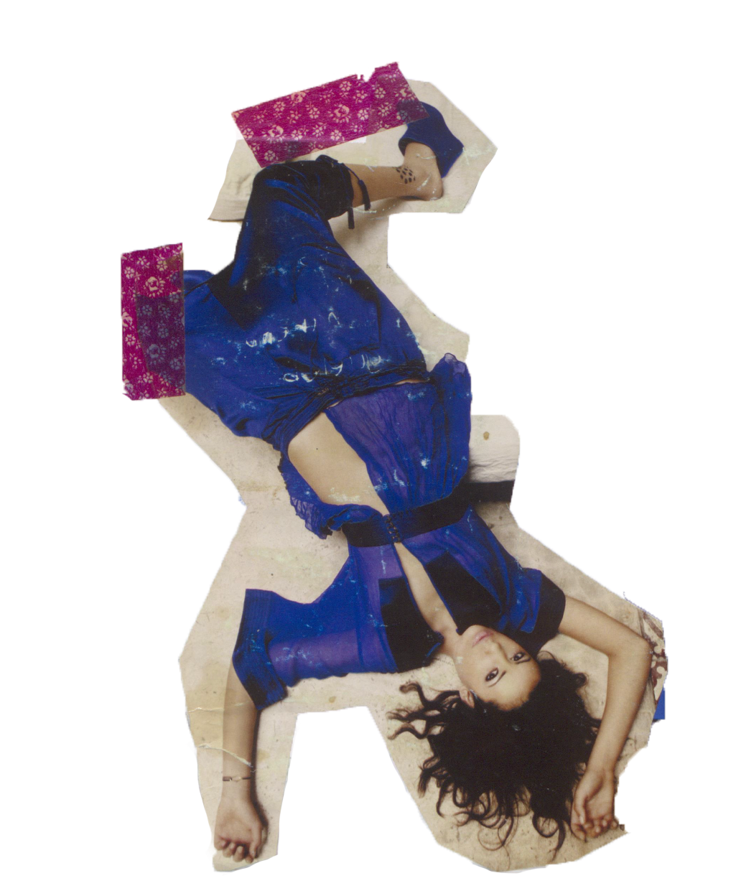
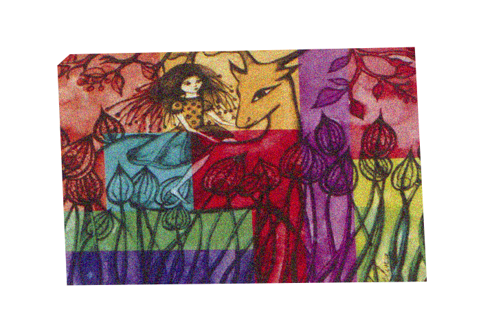

Also known as “the Red City”, Marrakech is the second largest city in Morocco. It has the biggest market place in Morocco. The city is bustling especially around Place Jemaa El Fna with people from different countries, while cars, donkeys and snakes crossing the place without any order whatsoever.
The Koutoubia Mosque is a building that is standing out in the midst of chaos, which was built in the 12th Century. I’ve witnessed so much aesthetics that is very exotic to me, such as Islamic building and African fashion.








